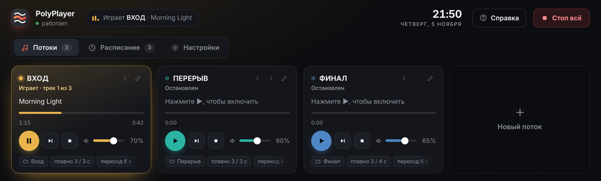
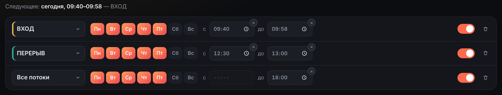

Создайте сколько угодно музыкальных потоков из своих папок и включайте их одной кнопкой — в программе, с пульта Stream Deck или автоматически по расписанию. Разобраться сможет любой, даже без технического опыта.

Перед началом звучит одно, в перерыве — другое, в конце — третье. PolyPlayer переключает музыку плавно: без резких обрывов и неловкой тишины.
Например, по будням в 9:40 начинает играть спокойная музыка, а к 9:58 она сама плавно затихает.
Нажали — музыка постепенно набирает громкость. Нажали ещё раз — мягко затихает и встаёт на паузу.
Включили другой поток — тот, что играл, сам уступит ему место. Переход получается незаметным.
Никаких сложных настроек: выбрали папку с музыкой, дали потоку название — и он готов к работе. Всё остальное программа берёт на себя.
Каждый поток — отдельный плеер со своей папкой, громкостью и цветом.
Музыка нарастает и затихает постепенно, треки перетекают друг в друга.
Потоки включаются и выключаются сами — по дням недели и в нужное время.
Музыка играет прямо с компьютера: без подписок, рекламы и зависимости от сети.
Правило «с — до». Поток включится в назначенное время и сам плавно затихнет к концу.
Правило «Все потоки». Выключает всю музыку, которая играет в этот момент. Удобно, когда к определённому часу должно стать тихо.

Stream Deck — это пульт компании Elgato с кнопками-экранчиками. Его подключают к компьютеру по USB, а каждой кнопке назначают своё действие. Такими пультами пользуются стримеры, звукорежиссёры и ведущие, когда всё нужно делать быстро и без мыши.
Stream Deck не обязателен: всё то же самое можно делать в окне программы.
Так кнопки PolyPlayer выглядят на пульте с 15 кнопками
Установка занимает минуту, права администратора не нужны.
Скачайте PolyPlayer и запустите установщик.
Для каждого потока выберите папку с музыкой и дайте ему понятное название.
Кнопкой в программе, с пульта Stream Deck или автоматически — по расписанию.
Да, полностью. PolyPlayer — программа с открытым исходным кодом (лицензия GPL v3), без рекламы и платных функций.
Нет. Музыка играет из папок на вашем компьютере. Интернет нужен только для того, чтобы программа узнала о выходе новой версии.
Нет. Всем можно управлять в окне программы, а регулярные включения доверить расписанию. Пульт пригодится, если удобнее нажимать отдельные кнопки, чем искать нужное на экране.
MP3, M4A, WAV, FLAC и OGG. Музыку из стриминговых сервисов PolyPlayer не воспроизводит.
Нет. Так Windows реагирует на программы, у которых пока нет платной цифровой подписи разработчика. Нажмите «Подробнее», затем «Выполнить в любом случае». Исходный код PolyPlayer открыт, и его можно проверить на GitHub.
Ничего делать не нужно: при запуске PolyPlayer сам сообщает о новой версии и устанавливает её за пару минут. Потоки и расписание сохраняются.